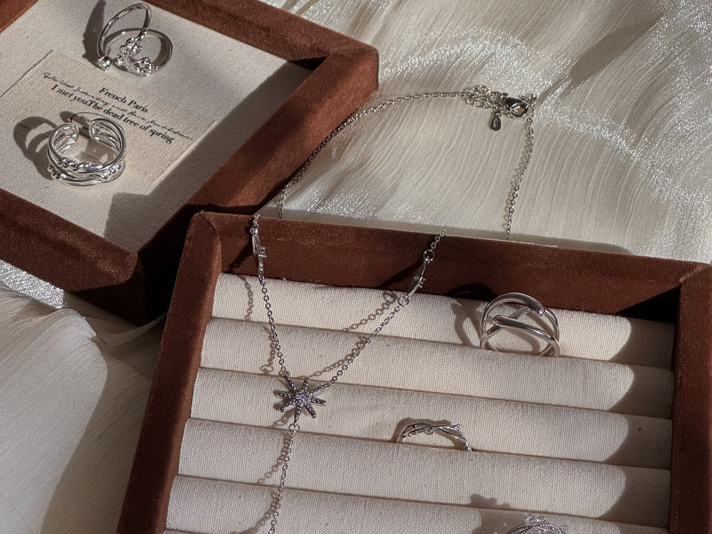

Quiet Confidence
Pieces that express personality without asking for attention.

Our Story
Wansé is a curated jewellery brand inspired by the quiet beauty found in everyday life. We believe jewellery should feel personal—an expression of confidence, memory and individuality rather than a performance for others.
Each piece is thoughtfully selected for its refined details, gentle character and ability to become part of real life.
The Wansé Philosophy
Pieces that express personality without asking for attention.
Jewellery inspired by small, meaningful moments of beauty.
Each design is selected with intention, versatility and individuality in mind.